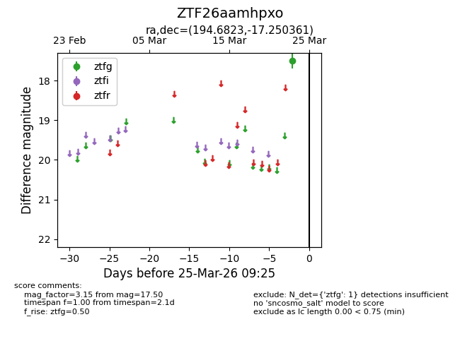
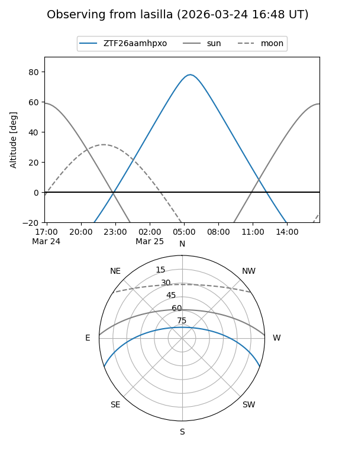
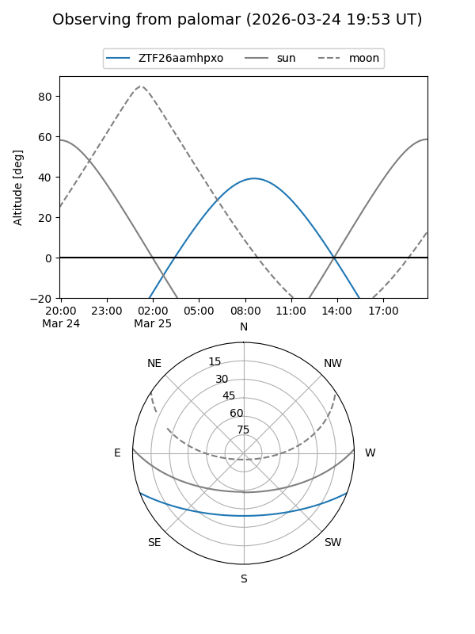

ZTF26aamhpxo
Target ZTF26aamhpxo at 2026-03-25 09:28
Aliases and brokers:
FINK: link
Lasair: link
ALeRCE: link
alt names
ZTF26aamhpxo (ztf,fink_ztf)
Coordinates:
equatorial (ra, dec) = 194.6823,-17.25036
equatorial (HMS+DMS) = 12:58:43.74,-17:15:01.30
galactic (l, b) = (305.4197,+45.58616)
Flags:
Photometry:
last ztfg=17.50
1 ztfg detections
Lightcurve

Visibility


Additional plots